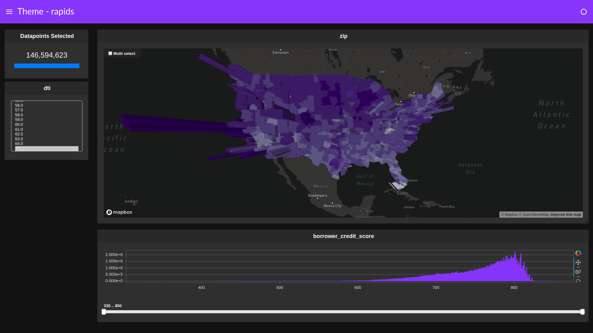

Themes¶
Load cuxfilter and data¶
[ ]:
from cuxfilter import charts
import cuxfilter
from bokeh import palettes
cux_df = cuxfilter.DataFrame.from_arrow('./data/146M_predictions_v2.arrow')
Declare charts¶
[ ]:
MAPBOX_API_KEY= "<mapbox-api-key>"
chart1 = charts.choropleth(x='zip', y='delinquency_12_prediction', color_column='delinquency_12_prediction', color_aggregate_fn='mean',
elevation_column='current_actual_upb', elevation_factor=0.00001, elevation_aggregate_fn='sum',
geoJSONSource = 'https://raw.githubusercontent.com/rapidsai/cuxfilter/GTC-2018-mortgage-visualization/javascript/demos/GTC%20demo/public/data/zip3-ms-rhs-lessprops.json',
data_points=1000, nan_color='white',
mapbox_api_key=MAPBOX_API_KEY)
chart2 = charts.bar('borrower_credit_score')
chart_widget = charts.multi_select('dti')
#create a list of charts
charts_list = [chart_widget, chart1, chart2]
Themes Types¶
1. Light¶
[ ]:
d = cux_df.dashboard(charts_list, layout=cuxfilter.layouts.feature_and_base, theme=cuxfilter.themes.light, title="Theme - light")
[8]:
await d.preview()

2. Rapids¶
[ ]:
d = cux_df.dashboard(charts_list, layout=cuxfilter.layouts.feature_and_base, theme=cuxfilter.themes.rapids, title="Theme - rapids")
[11]:
await d.preview()

3. Dark¶
[ ]:
d = cux_df.dashboard(charts_list, layout=cuxfilter.layouts.feature_and_base, theme=cuxfilter.themes.dark, title="Theme - dark")
[14]:
await d.preview()

[ ]: